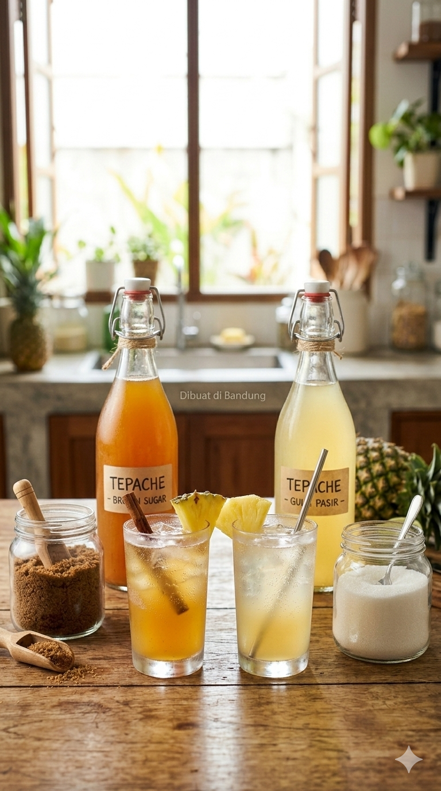

Cara Pembuatan
1. Siapkan alat dan bahan seperti toples kaca, talenan, pisau, nanas, gula, dan kayu manis (pastikkan alat-alat yang diggunakan sudah steril tidak ada kotoran).
2. Kemudian cuci buah nanas seluruhnya menggunakan sabun sampai tidak ada kotoran yang menempel.
3. Potonglah kulit nanas menggunakan pisau.
4. Masukkan potongan kulit nanas dan kayu manis ke dalam toples kaca.
5. Tambahkan 8 sendok makan gula ke dalam toples berisi kulit nanas dan kayu manis (berlaku gula pasir dan brown sugar).
6. Lalu tambahkan air sampai menutupi kulit nanas
7. Terakhir tutup rapat toples sampai tidak ada celah.
8. Fermentasi selama 2-3 hari dalam suhu ruangan.
9. Jika sudah terfermentasi selama 2-3 hari, saringlah air menggunakan penyaring dengan mangkuk stainless sebsgai penampung air tepache.
10. Tuangkan air tepache ke dalam gelas ukur.
11. Taruh corong dapur di atas botol kaca agar tidak terjadi adanya tumpah.
12. Lalu tuangkan air tepache ke dalam botol kaca.
13. Kemudian tutup rapat botol kaca agar tidak ada debu yang masuk.
14. Taruh ke dalam kulkas agar dapat mematikan produksi mikroorganisme.
15. Jika sudah dingin Tepache pun telah siap di minum.
